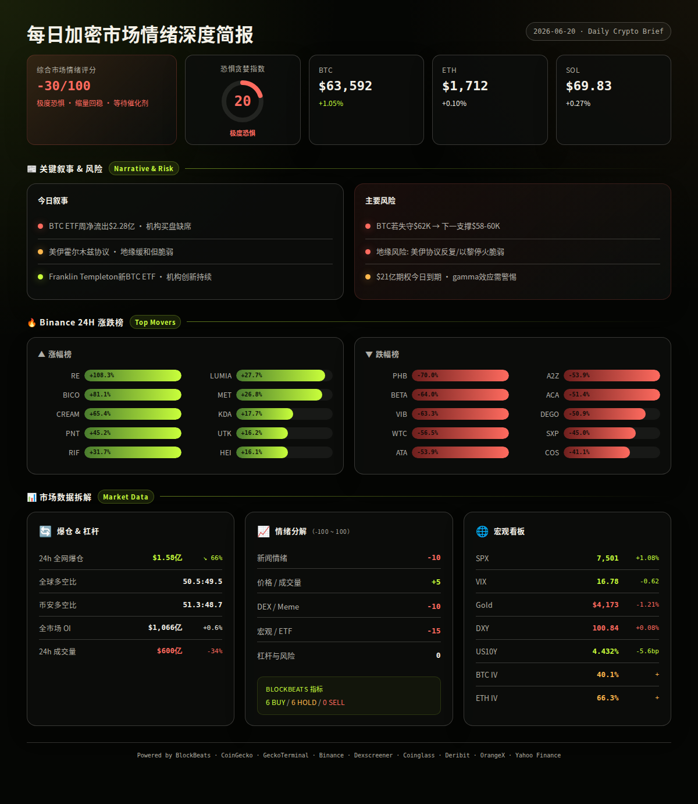
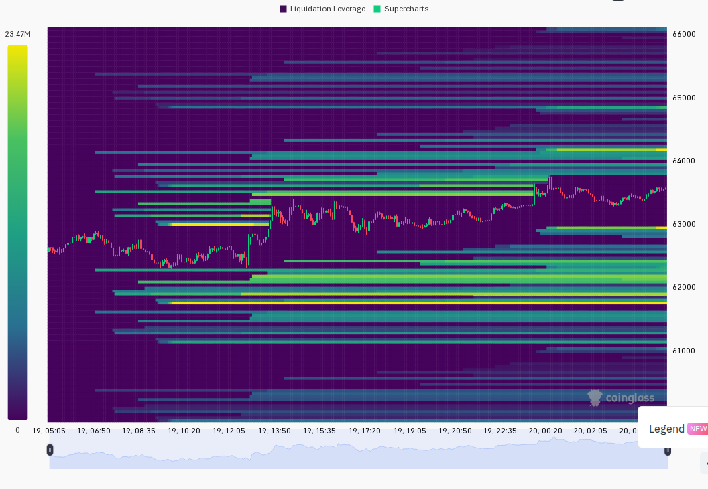
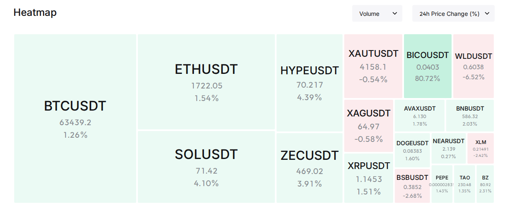

市场整体处于极度恐惧但价格回稳的微妙状态——BTC在$62,316-$63,666区间内温和反弹1%，ETH和SOL几乎原地踏步，VIX回落至16.78正常区间，但情绪面仍被美国-伊朗协议反复、以色列-黎巴嫩停火脆弱性、以及BTC ETF连续单周净流出所压制。X平台KOL讨论以AI/Agent叙事(71条)和地缘政治(41条)为主，代币层面$FLKR受到偏空关注。
24h变化: 情绪极度恐惧(F&G 20) | BTC $63,499 ↗1.0% | ETH $1,710 ↗0.1% | SOL $69.61 ↘0.1% | VIX 16.78(正常) | 24h成交量 $600亿 | DXY 100.84 ↗0.1% | US10Y 4.432% ↘5.6bp | 爆仓 $1.58亿 ↘66% (multi-source)
BTC / ETH / SOL
信息 1: 比特币网络活动逼近历史新高，小额交易和链上活动推动日交易量突破80万笔。分析师观点分歧：CryptoQuant创始人称BTC最大风险不是暴跌而是"无聊的价格"削弱信心；另有分析师预测BTC三季度可能在$50,000-$60,000区间形成宏观底部。 (BlockBeats)
信息 2: F2Pool联合创始人王纯近4小时内从Binance提取7,650 ETH和124.18 WBTC，总价值约$2,066万；Arthur Hayes向FalconX和Galaxy存入共6,000 ETH。某巨鲸10天内累计买入17,800 ETH(约$2,976万)。K3 Capital增持10,000 ETH(约$1,692万)。 (BlockBeats)
信息 3: 最大以太坊空头 pension-usdt.eth 已平仓全部ETH空头头寸，总利润超$4,168万，显示空头正在了结获利。 (BlockBeats)
ETF / 宏观 / 监管
信息 4: Franklin Templeton提交申请推出股息再投资型比特币ETF，这是BTC ETF产品形态的新探索。但本周美国BTC现货ETF合计净流出$2.275亿，周四单日净流出$9,070万，ETH现货ETF净流出$1,280万。 (BlockBeats)
信息 5: 美国-伊朗就霍尔木兹海峡通行达成初步协议，海峡已重新开放航运，部分滞留船只开始通行。但条款不清晰、停火谈判暂时中止，伊朗要求美方保证以色列停止对黎巴嫩敌对行动。以色列内阁部长称"应摧毁整个黎巴嫩"，局势仍高度不确定。 (BlockBeats)
信息 6: 市场已完全定价9月加息25bp预期，CME FedWatch显示7月加息概率39.6%。俄罗斯央行降息25bp(市场预期50bp)，日本央行加息未能阻止日元贬值至近40年低点。美国股市本周录得创纪录资金流入，SPX小幅上涨至7,501(+1.1%)。 (BlockBeats, Yahoo Finance)
DeFi / 安全事件
信息 7: Aave在rsETH危机中面临$84.5亿的提款冲击，重新引发对DeFi风险管理能力的讨论。Vitalik发文探讨DeFi中期权产品的可行性。Humanity Protocol攻击者将130 ETH跨链至BNB Chain。微软披露新型加密货币窃取木马Crypto Clipper，自2月以来已感染多台Windows设备。 (BlockBeats)
信息 8: 前以太坊基金会核心成员警告ETH可能在3-9个月内面临协议资金危机。南韩政府考虑放宽跨境虚拟资产转移门槛。日本金融厅责令富途证券子公司moomoo暂停部分业务(含新开户)3个月。 (BlockBeats)
AI / 半导体叙事
信息 9: Elastic以最高$8,500万收购AI驱动软件漏洞检测公司Deductive。Meta与数据中心开发商Crusoe签署新AI算力协议。美国核能公司Standard Nuclear申请IPO，AI数据中心获美国政府并网绿灯。 (BlockBeats)
信息 10: AI营销自动化公司Gradial完成$6,500万C轮融资。世界构建初创公司General Intuition洽募约$3亿融资。Snapchat因成本压力将AI视频团队拆分为新公司Dotmo。印度RMZ集团将以$350亿投资扩大数据中心容量。 (BlockBeats)
信息 11: Anthropic承诺与白宫更紧密合作应对模型安全风险。智源首席科学家回应马斯克"中国大模型Q1逼近Fable"言论称用时会更短。SK海力士Q2利润预期达60-70万亿韩元，AI存储需求再创新高。 (BlockBeats)
Meme / 小市值代币
信息 12: RE代币24h暴涨超108%，市值达$1.51亿。催化剂：Upbit和Bithumb同日宣布上线RE韩元交易对。DEX上RE(以太坊)对价$0.90，流动性$92万，24h成交量$131万，买卖比888:717偏多。 (Binance, Dexscreener, BlockBeats)
信息 13: CoinUp平台币CPX创历史新高突破$0.829。BICO +81%、CREAM +65%随韩国交易所利好异动。Solana链memecoin活跃：Nudaeng +84%、WASABICRAFT +367%、GTAVI +271%均在GeckoTerminal上榜。但多数meme流动性极低、实际链上成交量不足，炒作风险极高。 (Binance, GeckoTerminal)
预测市场 / Polymarket
信息 14: Predict.fun世界杯小组赛热度持续：美国vs澳大利亚美国胜率61%；葡萄牙vs刚果民主共和国葡萄牙胜率77%。某个人预测者单日四单全中获利$924万。Kalshi开发AI Agent工具用于压力测试市场预测交易风险。 (BlockBeats)
融资 / VC
信息 15: 收藏品RWA基础设施Renaiss完成$150万种子轮(YZi Labs领投)。稳定币/法币基础设施Range完成$830万A轮。Karta完成$1.4亿A轮(Galaxy Ventures联合领投，看好全球旅行信用卡增长)。数字广告初创EarnOS完成$600万Pre-A轮(1kx领投，Coinbase Ventures参投)。去中心化再保险协议Re获Coinbase Ventures战略投资。 (BlockBeats)
交易所 / 机构
信息 16: Coinbase比特币溢价指数本周短暂转正后再度回落至负值，反映美国买盘力量不足。Binance市场情绪分析显示散户在逢低买入但整体偏空，BTC后续方向取决于空头挤压和鲸鱼博弈。Bhutan政府关联地址从Binance提取533 BTC(约$3,340万)。未知地址向OKEx转入2,500 BTC(约$1.57亿)。 (BlockBeats)
信息 17: IOSG创始合伙人称项目方在顶级交易所上币中位成本约$800万。某巨鲸清算1,105 BTC亏损$2,690万。BTC和ETH期权合约名义价值超$21亿今日到期。 (BlockBeats)
板块轮动
信息 18: CoinGecko板块涨幅前三：ST0x Ecosystem +51.8%、Fighting Games +42.6%、Orynth Ecosystem +26.6%(均为小市值板块)。跌幅前三：NFT Lending/Borrowing -28.1%、Tower Defense Games -25.6%、Tourism -20.0%。板块轮动呈现明显的小市值/游戏叙事轮换特征。 (CoinGecko)
Binance 涨跌榜
信息 19: 24h涨幅榜：RE +108.3%、BICO +81.1%、CREAM +65.4%、PNT +45.2%、RIF +31.7%、LUMIA +27.7%、MET +26.8%、KDA +17.7%、UTK +16.2%、HEI +16.1%。24h跌幅榜：PHB -70.0%、BETA -64.0%、VIB -63.3%、WTC -56.5%、ATA -53.9%、A2Z -53.9%、ACA -51.4%、DEGO -50.9%、SXP -45.0%、COS -41.1%。跌幅榜大面积超50%，疑似合约清算或项目风险事件导致的集中崩跌。 (Binance)
风险1: 美国-伊朗协议反复，霍尔木兹海峡通行条款不清晰 → 观察: 若伊朗重新封锁海峡或以色列发动新攻击，风险资产(含BTC)可能联动下跌；失效条件: 若美伊正式签署并执行协议，地缘溢价消退。 (BlockBeats, analysis)
风险2: BTC ETF连续一整周净流出$2.275亿 → 观察: 若下周BTC ETF继续净流出且超$1亿，机构撤退信号将强化，可能打压BTC至$60K以下；失效条件: 若下周一出现净流入且超$5,000万，资金面恢复。 (BlockBeats, analysis)
风险3: Binance跌幅榜大面积超50%，PHB/BETA/VIB等集体崩跌 → 观察: 是否引发连锁清算或恐慌蔓延至中大型代币；失效条件: 若崩跌币种仅限于已被标记低流动性/高风险的项目，不扩散至主流板块。 (Binance, analysis)
风险4: ETH ATM IV高达66.3%，BTC仅40.1%，IV利差26pp → 观察: 若ETH IV持续高企但价格不动，说明买方在押注但卖家在吸筹，方向未定；失效条件: 若ETH IV快速回落至50%以下，说明投机意愿消退。 (Deribit, analysis)
风险5: 市场情绪极度恐惧(F&G 20)但价格未创新低 → 观察: 历史上极度恐惧区间往往接近底部，但若BTC跌破$62,000(24h低点)，下一支撑在$60,000-58,000；失效条件: 若BTC放量突破$64,000，极度恐惧可能是一次假信号。 (OrangeX, Binance, analysis)
风险6: $21亿BTC+ETH期权今日到期 → 观察: 到期前后可能出现价格异动，尤其是$63,000-$65,000区间的大量未平仓合约；失效条件: 若到期后波动率不升反降，说明到期已被提前定价。 (BlockBeats, Deribit, analysis)
非财务建议声明: 本报告仅提供市场数据和情绪分析，不构成任何买卖建议。
6月20日 — BTC/ETH期权到期日，名义价值超$21亿 — 高波动风险 (BlockBeats, neutral)
6月20日 — 世界杯小组赛美国vs澳大利亚(03:00 UTC+8) — 预测市场活跃，可能吸引短线博彩资金流入 (BlockBeats, neutral)
6月21-22日 — 美伊潜在面对面会谈 — 若达成实质协议，利好风险资产；若破裂，避险情绪上升 (BlockBeats, bullish/bearish)
6月下旬 — 多项目代币解锁(关注具体项目日历) — 解锁前通常偏空 (BlockBeats, bearish)
6月25-26日 — 美国Q1 GDP终值、PCE通胀数据 — 影响9月加息概率定价 (BlockBeats, neutral)


=== 第二段：数据与技术面 ===
整体评分: -30/100 (较昨日推断略微改善)
新闻情绪: -10/100 — 地缘政治(美伊协议反复、以黎停火脆弱)与ETF持续流出主导负面叙事，但Franklin Templeton新ETF申请、大额ETH累积和空头了结提供正向支撑。X平台AI/Agent讨论(71条)保持热度。 (BlockBeats, X signals)
价格/成交量: +5/100 — BTC温和反弹1%，13/24根阳线显示低位有承接。但全球24h成交量仅$600亿，较昨日缩量明显(-34%)，反弹缺乏量能支撑。ETH和SOL几乎平盘，市场焦点集中在个别小币。 (Binance, CoinGecko, Coinglass)
DEX/meme活跃度: -10/100 — Solana链DEX呈现极高风险的memecoin炒作(WASABICRAFT +367%、GTAVI +271%、FLKR +267%)，但大部分实际链上成交量极低。48h内无符合$5万流动性+$10万成交量标准的新池子。Megafilter返回空结果。 (GeckoTerminal)
宏观/ETF/流动性: -15/100 — DXY维持100.84高位，处于强势区间，压制风险资产估值。US10Y 4.43%仍偏高。黄金单日跌1.2%至$4,173，显示避险资产也在失血。BTC ETF周净流出$2.28亿，机构资金面偏空。但SPX +1.1%和美股创纪录周流入是积极信号。 (BlockBeats, Yahoo Finance)
杠杆与风险: 0/100 — 24h爆仓仅$1.58亿(较昨日降66%)，市场大幅去杠杆后杠杆率回归健康。全球多空比50.5:49.5基本均衡，Binance TV多空比51.3:48.7也接近中性。OI总计$1,066亿基本持平(+0.6%)。BTC资金费率0.59%略偏多但未过热。 (CoinGecko, Coinglass)
BlockBeats 市场脉动指标(12项):
· 整体市场流动性指数: Buy
· 比特币流动性指数: Buy
· 以太坊流动性指数: Hold
· 过去24h累积比特币流动性指数: Buy
· 整体市场流动性(BTC计价): Buy
· 合约多空比偏离指数: Hold
· 山寨币抗跌指数: Caution
· Bitfinex BTC/USD溢价: Hold
· USDC/USDT溢价: Buy
· Binance USDT借贷利率: Buy
· 持仓量加权资金费率年化利率: Hold
综合: 6 Buy / 0 Sell / 6 Hold — 底部信号偏多但无过热卖出信号 (BlockBeats)
BTC: $63,592, 24h +1.05%, 24h成交量$8.97亿(Binance), 24h高$63,666 低$62,316。24根1h K线中13根阳线，价格从$62,316低位震荡上行，尾盘回稳在$63,500上方。合约溢价指数-0.044%，期货轻微贴水(偏空信号)。 (Binance)
ETH: $1,712, 24h +0.10%, 24h成交量$2.82亿, 24h高$1,720 低$1,679。与BTC走势共振但更弱，13/24阳线，尾盘回落至$1,710附近盘整。合约溢价-0.044%，期货同样轻微贴水。 (Binance)
SOL: $69.83, 24h +0.27%, 24h成交量$1.30亿, 24h高$70.09 低$67.92。12/24阳线，相对中性，$68附近有一定支撑。合约溢价-0.044%，与BTC/ETH一致。 (Binance)
全局: 加密货币总市值$2.26万亿，24h +0.25%，24h总成交量$600亿(CoinGecko)。BTC市占率56.1%。 (CoinGecko)
衍生品杠杆(CoinGecko全交易所):
· BTC: 总OI约$527亿，总成交量$874亿。Binance OI $61.9亿(FR 0.59%)，MEXC OI $44.3亿(FR 0.59%)，Gate OI $38.1亿(FR 0.39%)。最高FR: Bitrue 4.40%(异常)，最低FR: BigONE -1.94%(异常)。主流交易所FR均在正常区间0.3-0.6%。 (CoinGecko)
· ETH: 总OI约$312亿，总成交量$532亿。Binance OI $37.8亿(FR 0.25%)，BYDFi OI $27.3亿(FR 1.00%偏高)，WEEX OI $22.6亿(FR -0.002%)。最高FR: AscendEX 4.20%(异常)，最低FR: HitBTC -6.98%(异常)。 (CoinGecko)
· SOL: 总OI约$64亿，总成交量$128亿。Binance OI $6.9亿(FR -0.30%偏空)，Gate OI $6.6亿(FR 0.29%)，CoinW OI $4.9亿(FR -0.29%)。SOL整体资金费率偏空(-0.30%)值得注意，可能反映交易员在$70附近做空情绪。 (CoinGecko)
爆仓数据(Coinglass): 24h全网爆仓$1.58亿，较昨日下降66.5%。无重大单边爆仓事件，多空清算较为均衡。说明市场杠杆已从前一轮下跌中大幅出清。 (Coinglass)
多空比(Coinglass): 全球LS 50.47:49.53(近乎均衡)。Binance TV LS 51.28:48.72(Binance用户略偏多，但偏离不大)。两者一致性较高，无显著的散户/大户分歧信号。 (Coinglass)
跨平台OI(BlockBeats合约, 6月18日数据):
· Binance: OI $178.8亿, 24h成交量$365.7亿
· Bybit: OI $87.4亿, 24h成交量$137.4亿
· Hyperliquid: OI $61.6亿, 24h成交量$59.8亿
较6月17日：Binance OI -2.6%、Bybit +0.7%、Hyperliquid -5.0%。三大平台OI整体小幅下降，反映杠杆出清。 (BlockBeats)
宏观看板: SPX 7,501, 24h +1.08% ↗。VIX 16.78(正常区间)。DXY 100.84, 24h +0.08%, 7d +1.05% ↗(美元走强持续施压)。US10Y 4.432%, 24h -5.6bp, 7d -4.5bp(长端利率微降，边际利好风险资产)。黄金$4,173, 24h -1.21%, 5d -3.58% ↘(黄金与BTC同向下跌，不符合避险资产联动逻辑，暗示两者都在被美元走强和实际利率走高压制)。 (Yahoo Finance, BlockBeats)
期权波动率(Deribit): BTC ATM IV 40.14%(正常区间，接近下限)。ETH ATM IV 66.31%(偏高，ETH-BTC IV利差26.17pp，远超15%阈值，显示altcoin投机溢价显著)。BTC IV接近VIX的两倍属结构性常态，ETH IV是BTC的1.65倍，说明ETH期权市场定价了更高的波动预期——可能受$21亿期权到期和质押/协议资金叙事影响。 (Deribit)
RE (Ethereum): $0.90, 24h +108.3%, 市值$1.51亿。DEX: 流动性$92万, 24h成交量$131万, 买卖比888:717。催化剂: Upbit + Bithumb同日宣布上线韩元市场，韩国散户FOMO买入。风险: 上线炒作型行情，DEX流动性极薄，若限价单撤销或CEX暴跌可能引发踩踏。 (CoinGecko, Binance, Dexscreener, BlockBeats)
CARDS (Solana): $0.30, 24h -3.8%, 市值$8,130万。DEX: 流动性$1.21亿, 24h成交量极低(不足$1万)。Solana链上净流入排名第一($154万)。催化剂: 收藏卡RWA叙事，CoinGecko Trending #10。风险: DEX实际成交量极低，链上净流入可能来自做市商或内部转移，非真实用户需求。 (CoinGecko, GeckoTerminal, BlockBeats, Dexscreener)
BICO (Ethereum): $0.25(估算), 24h +81.1%, 市值约$2亿(估算)。催化剂: 可能与韩国交易所动态或项目进展相关，需进一步验证。风险: 急涨+高波动，缺乏明确催化剂下追高风险大。 (Binance)
CREAM (Ethereum): $19.50(估算), 24h +65.4%, 市值约$1,500万(估算)。催化剂: DeFi借贷协议，可能与Aave rsETH危机后资金外溢至竞品相关。风险: 小市值代币，流动性有限，DeFi协议安全风险。 (Binance)
Nudaeng (Solana): DEX价格动态, 24h +84.1%, GeckoTerminal成交量$284万。催化剂: Solana memecoin，GeckoTerminal trending pool #2。风险: memecoin高风险，无基本面支撑。 (GeckoTerminal)
WASABICRAFT (Solana): DEX价格动态, 24h +366.5%, GeckoTerminal成交量$193万。催化剂: Solana memecoin极速拉升。风险: 极端波动，可能已见顶，流动性陷阱。 (GeckoTerminal)
FLKR (Solana): DEX价格$3.80-$5.23, 24h +266.5%(GT数据), 但DEX成交量仅约$1,100显示极低实际交易。X平台提及10次/5人偏空。催化剂: X KOL讨论。风险: X热度与DEX成交量严重背离，典型"喊单多、没人买"模式。 (GeckoTerminal, Dexscreener, X signals)
· GeckoTerminal Solana trending pools top 3(>$100万成交量): CARDS/USDC $348万(-3.8%), Nudaeng/SOL $284万(+84.1%), CookingTrump/SOL $231万(-99.0%)。CookingTrump已暴跌99%接近归零，高风险警示。 (GeckoTerminal)
· GeckoTerminal Solana新池子(48h): 无满足$5万流动性+$10万成交量标准的池子，DEX新币发行热度显著下降。 (GeckoTerminal)
· BlockBeats Solana链上净流入 top 5: CARDS $154万, SYRUPUSDC $60万, CBBTC $53万, ETH $52万, BP $46万。CARDS净流入居首但DEX成交量极低，可能为做市商行为。 (BlockBeats)
以上代币标注为观察列表，不构成买入建议。
情景1 (概率: 50%, 置信度: 中): BTC继续在$62,000-$64,000区间窄幅震荡。霍尔木兹海峡协议虽然脆弱但维持基本通行，美伊会谈计划推进但无实质突破。BTC ETF流出逐步收敛，$21亿期权到期后波动率回落。市场等待下周GDP/PCE数据给出方向。关键条件: BTC守稳$62,000，VIX不破20，无重大地缘冲突升级。若发生则BTC目标$63,000-$64,500，ETH $1,700-$1,750。 (analysis)
情景2 (概率: 25%, 置信度: 低): 空头挤压推动BTC突破$64,000。若BTC有效站上$64,000，将触发CEX合计$7.86亿空头清算，推动快速空头回补。配合期权到期后gamma hedging效应，可能出现5-8%的快速拉升。关键条件: BTC放量突破$64,000持续超1小时，交易量需超$10亿/小时(Binance)。若发生则BTC目标$66,000-$68,000，ETH $1,800-$1,900。 (BlockBeats, Binance, analysis)
情景3 (概率: 25%, 置信度: 中): 地缘政治恶化或宏观利空推动BTC跌破$62,000。伊朗协议破裂、以黎冲突再燃、或FOMC鹰派发言强化加息预期。BTC ETF流出持续扩大，配合$60K下方止损盘触发踩踏。关键条件: 美国-伊朗会谈取消或冲突升级，或下周经济数据(CPI/PCE)显著超预期。若发生则BTC目标$58,000-$60,000，ETH $1,550-$1,600。 (BlockBeats, analysis)
以上为基于当前数据的概率判断，不构成交易建议。